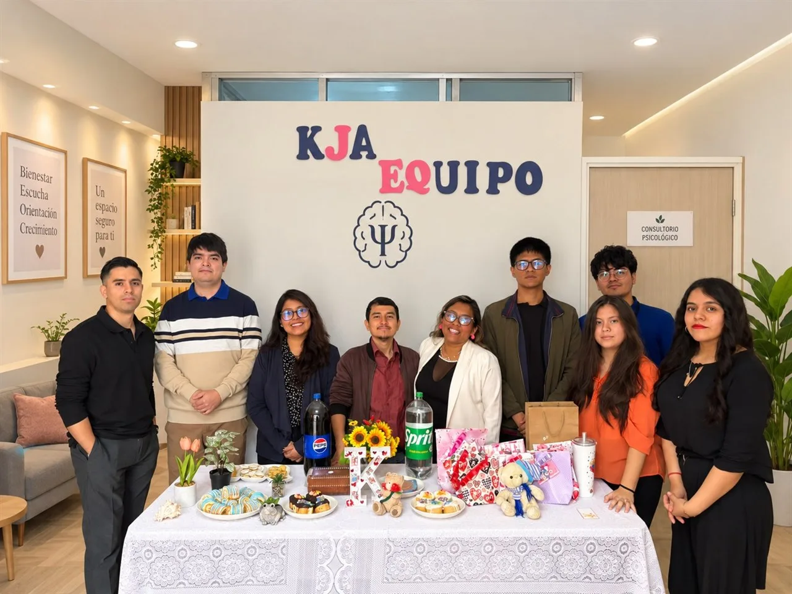
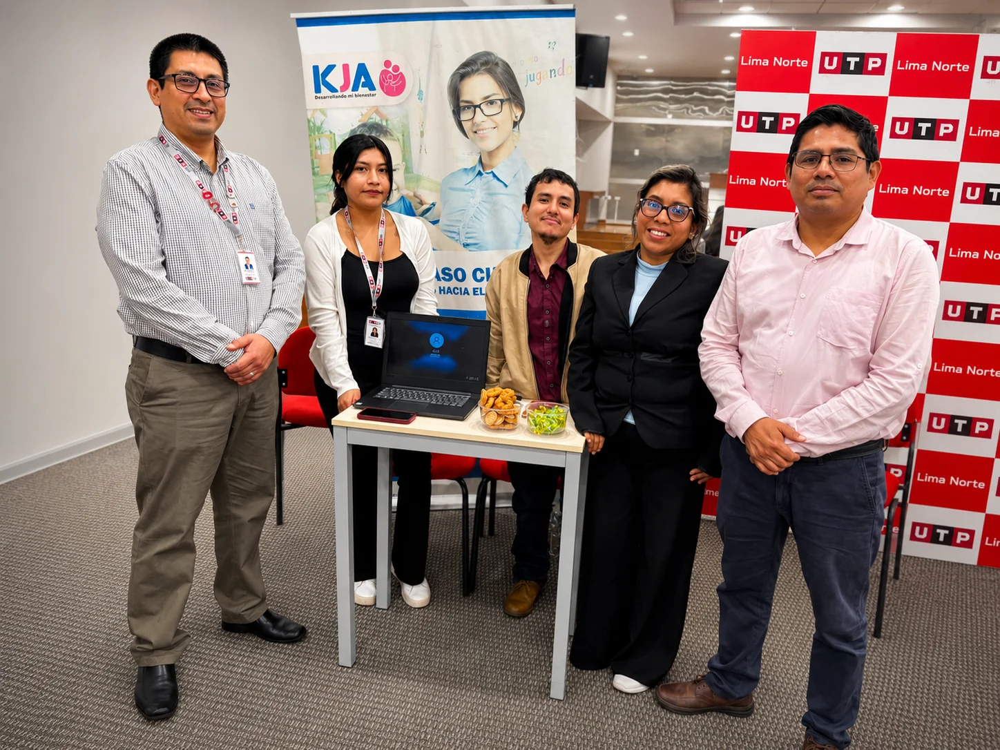
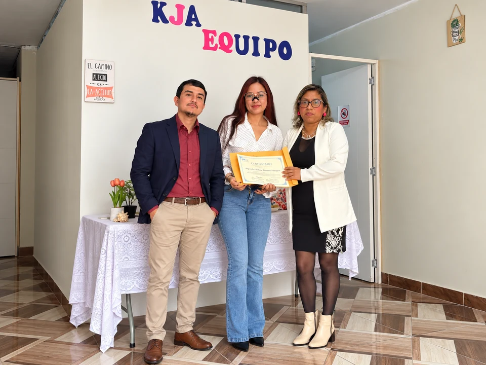
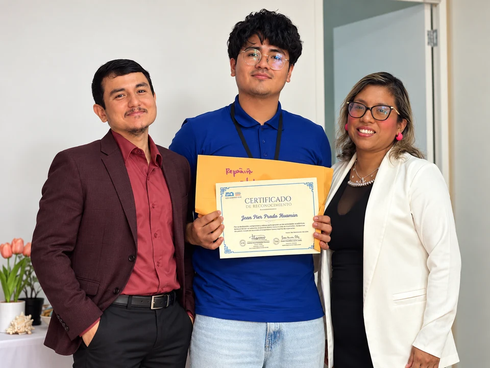

Cargando...
Da el siguiente paso en tu formación profesional. Postula a nuestras oportunidades de prácticas, internado y plazas para egresados.
Flujo guiado en 4 pasos: revisa los requisitos, adjunta tu CV, agenda tu entrevista y confirma tu postulación.
Plazas para practicantes pre-profesionales, internado y egresados. Certificación oficial al culminar y formación continua semanal.
Difusión diaria de afiches institucionales y talleres en grupos de Facebook para conectar la salud mental con nuestra comunidad.
Elige según tu disponibilidad y ciudad: Presencial en Sede San Luis (Jr. Río Amazonas 214) o Remoto desde casa con soporte continuo.
Turnos adaptados (mañana o tarde) que se coordinan directamente con tus clases universitarias y compromisos personales.
Revisa imágenes y videos reales de nuestra sede en San Luis, consultorios terapéuticos y testimonios del equipo.




Completa tus datos oficiales y adjunta tu Currículum Vitae para que la Dirección evalúe tu perfil.
Selecciona la fecha, el horario y la modalidad para tu reunión con Dirección. Ingresa el correo electrónico donde se te notificará si tu postulación fue aprobada.
El equipo de KJA revisará tu CV y tu disponibilidad. La entrevista solicitada queda sujeta a coordinación; recibirás la respuesta a través del correo de contacto que registraste.
, recibimos tu solicitud y tu CV. Administración revisará tu expediente y coordinará contigo los siguientes pasos.
La fecha y el horario están sujetos a confirmación de KJA.
El equipo usará este correo para comunicarse contigo. Revisa también la carpeta de correo no deseado.
Tu expediente es de acceso restringido al equipo administrativo autorizado de KJA.
Centro Psicológico KJA · Programa de Prácticas e Internado Clínico
Jr. Río Amazonas 214, San Luis, Lima · Modalidad Presencial y Remota
Centro Psicológico KJA · Registros y ceremonias oficiales
Testimonios de nuestro equipo, psicólogos colegiados y recorrido por los consultorios de la Sede San Luis.
Testimonios y bienvenida de Dirección KJA